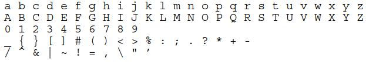

©2005 by Lockheed Martin Corporation.
分发声明A:批准公开发布,分发不受限制
本文档的目的是为C++程序员提供指导和指导，使他们能够采用良好的编程风格和经过验证的编程实践，从而获得安全、可靠、可测试和可维护的代码。因此，本文件中所包含的规则对于飞行器C++开发是必需的，并推荐用于非空中飞行器C++开发。
如上所述，部分飞行器（AV:Air Vehicle）代码将在C++中开发。C++被设计为支持数据抽象、面向对象编程和泛型编程，同时保持与传统C编程技术的兼容性。因此，AV编码标准将侧重于以下方面：
MISRA指南是专门为在包含安全方面的系统中使用而编写的。 该指南解决了潜在的不安全的C语言特性，并提供了避免这些陷阱的编程规则。基于MISRA C子集的车辆系统安全关键编码标准为C提供了一套更全面的语言限制，这些限制在车辆系统安全关键应用中得到统一应用。AV编码标准建立在前两个文档的相关部分上，并在安全关键环境中使用一组特定的规则来使用适当的C++语言特征（例如继承、模板、命名空间等）。
总的来说，规则集所体现的哲学本质上是C++关于C的哲学的延伸，也就是说，通过为“不安全”的设施提供“更安全”的替代品，避免了低级特征的已知问题。实际上，程序是在超集的“更安全”子集中编写的。
{略}
本编码标准文档旨在帮助程序员开发符合安全关键软件原则的代码，即不包含可能导致灾难性故障并对个人和/或设备造成重大损害的缺陷的代码。通常，生成的代码应具有以下重要特性：
可靠性：可执行代码应该以可预测的方式一致地满足所有需求。
可移植性：源代码应该是可移植的（即不依赖于编译器或链接器）。
可维护性 ：源代码应该以一致、可读、设计简单、易于调试的方式编写。
可测试性：应该以促进可测试性来编写源代码。将每个软件模块的以下特性最小化将有助于更可测试和维护的模块：
- 代码大小
- 复杂性
- 静态路径计数（通过一段代码的路径数）
可重用性：鼓励设计可重用组件。组件重用可以消除冗余的开发和测试活动（即降低成本）。
可扩展性：期望需求在产品的生命周期中不断发展。因此，系统应该以可扩展的方式开发（即，需求中的干扰可以通过本地扩展而不是批量修改进行管理）。
可读性：源代码的编写方式应易于阅读、理解和理解。
请注意，遵循本文档中包含的指导原则并不能保证生产出无错误、安全的产品。但是，遵守这些指导原则以及软件开发计划中定义的过程将有助于程序员生成干净的设计，以尽量减少常见错误和错误的来源。
耦合和内聚是已分解为模块的系统的属性。内聚性是衡量同一模块中的各个部分在多大程度上结合在一起的度量。耦合是一个系统中不同模块之间交互量的度量。因此，内聚处理模块内的元素（非常适合的元素是同一模块的一部分），而耦合处理模块之间的关系（模块粘合在一起的紧密程度）
面向对象的设计和实现通常支持期望的耦合和内聚特性。OO技术背后的设计原则导致模块内的数据内聚。模块之间干净的接口使模块能够松耦合。此外，数据封装和数据保护机制提供了一种帮助实现耦合和内聚目标的方法。
源代码应该开发为一组模块，这些模块应该松散耦合，这是合理可行的。注意，通用编程（需要使用模板）允许使用松耦合和运行时开销编写源代码。
紧密耦合软件的示例包括：
有时，紧密耦合软件是不可避免的，但应尽量减少使用，并按照以下指导原则进行本地化和最小化：
AV 规则 1 任何一个函数（或方法）将包含不超过200个逻辑源代码行（L-SLOC）。
AV 规则 2 不应有任何自修改代码。
AV 规则 3 所有函数的循环复杂度应小于等于20。{循环内不超过20行?}
下面的规则和建议的目的是定义一种C++编程风格，使程序员能够产生的代码更多的：
为了达到这个目标,程序应该:
有三种类型的规则:should,will和shall;每一个规则都使用粗体should,will,shall来制定它的类型:
AV 规则 4若要违反“should”规则，开发者必须获得以下批准:
AV 规则 5若要违反"will"或者"shall"规则,开发者必须获得下列批准:
AV 规则 6 对“shall”规则的每一项偏离应记录在包含偏离的文件中）。不允许偏离本规则,尽管有规则5
有些规则可能包含例外。如果规则确实包含异常，则该异常允许的偏差不需要批准。
AV 规则 7与“shall”或“will”规则的偏差符合该规则规定的例外情况时，无需获得批准。
变量或函数的声明宣布变量或函数的属性；它由类型名和变量或函数名组成。对于函数，它告诉编译器名称、返回类型和参数。对于变量，它告诉编译器名称和类型
int32 fahr;
int32 foo ();
默认构造函数是不需要参数的构造函数
AV 规则 8所有代码应符合ISO/IEC 1488∶2002（E）标准C++。
请注意，如果将一种或多种外语用于输入/输出目的（例如向飞行员显示信息），则可能需要修改本节中的规则。
AV 规则 9只有在C++基本源字符集中指定的字符才会被使用。此集合包括96个字符：空格字符、表示水平制表符、垂直制表符、换行符和换行符的控制字符，以及以下91个图形字符：

AV 规则 10字符类型的值将仅限于ISO 10646-1中定义和记录的子集。
AV 规则 11不使用Trigraphs(三合字母?),Trigraphs序列是三个字符序列，可由相应的单个字符替换，如下所示：
| 替代 | 基本 | 替代 | 基本 | 替代 | 基本 |
|---|---|---|---|---|---|
| ??= | # | ??( | [ | ??< | { |
| ??/ | \ | ??) | ] | ??> | } |
| ??' | ^ | ??! | | | ??- | ~ |
AV 规则 12下列二合字母将不被使用
| 替代 | 基本 | 替代 | 基本 |
|---|---|---|---|
| <% | { | :> | ] |
| %> | } | %: | # |
| <: | [ | %:%: | ## |
AV 规则 13将不使用多字节字符和宽字符串文本
AV 规则 14文字后缀应使用大写字母而不是小写字母。int asd=64L
AV 规则 15应规定运行时检查（防御编程）
AV 规则 16只有DO-178B级A（15）可认证的或密封的1 C/C++库应与安全关键（即密封1）代码一起使用。{???}
AV规则17到AV规则25禁止使用一些行为为本地特定、未指定、未定义、实现定义或其他定义不好的功能，因此容易出错。
AV 规则 17不得使用误差指示器errno。
AV 规则 18不应使用library< stddef.h>中的宏offsetof
AV 规则 19 < locale.h>和setlocale函数不能使用。
AV 规则 20 不应使用setjmp宏和longjmp函数。
AV 规则 21不得使用< signal.h>的信号处理设施
AV 规则 22不得使用输入/输出库< stdio.h>
AV 规则 23不得使用来自< stdlib.h>中的库函数atof、atoi和atol
AV 规则 24来自< stdlib.h>中的库函数abort、exit、getenv和system,不得使用。
AV 规则 25不应使用库< time.h>的时间处理功能
由于预处理器对C++一无所知，所以它不应该用来做C++中可以做的事情。
AV 规则 26只能使用以下预处理器指令
AV 规则 27 #ifndef、#define和#endif将用于防止同一头文件被包含多次。将不使用其他技术来防止头文件的多重包含。
#ifndef TEST_H //test.h #define TEST_H //test.h的内容 #endif
AV 规则 28 ifndef和endif预处理器指令只能按照规则27中的定义使用，以防止同一头文件包含多个内容。
AV 规则 29定义预处理器指令不得用于创建内联宏。应使用内联函数代替
AV 规则 30定义#define预处理器指令不得用于定义常量值。相反，常量限定符应应用于变量声明，以指定常量值。
AV 规则 31#define 预处理指令将仅用作防止同一头文件包含多个内容的技术的一部分。
AV 规则 32#include预处理指令将只用于包含(*.h)文件
AV 规则 33#include指令应使用< filename.h>符号来包含头文件。请注意，也可以使用相对路径名。有关头文件名的其他信息，请参见AV规则53、AV规则53.1和AV规则55。
AV 规则 34头文件应该只包含逻辑相关的声明。最小化不需要的依赖
AV 规则 35头文件将包含一种机制，该机制可防止自身的多个包含。
AV 规则 36尽可能减少编译依赖项
AV 规则 37头（包括）文件应该只包括那些成功编译所需的头文件。仅由关联的.cpp文件使用的文件应放在.cpp文件中，而不是.h文件中。
AV 规则 38只能通过指针（*）或引用（&）访问的类的声明应should由只包含转发声明的转发头提供
AV 规则 39头文件（*.h）将不包含非常量变量定义或函数定义。（另见AV规则139。）
AV 规则 40每个实现文件应包括唯一定义所用内联函数、类型和模板的头文件。
由于形式和外观的一致性，对语法元素的格式施加约束使源代码更容易读取。请注意，自动代码生成器应该配置为在可能的情况下生成符合样式指南的代码。但是，对于无法合理配置为符合“should”或“will”样式规则的代码生成器，则会有例外（必须仍然遵循“安全关键”的“shall”规则）。
AV 规则 41源行的长度将保持在120个字符或以下。
AV 规则 42每个表达式语句将位于单独的行上
AV 规则 43避免tabs键
AV 规则 44所有缩进至少有两个空格，并且在同一个源文件中保持一致。
标识符名字选择应该:
此外，下列命名约定规则中的“单词(word)”一词可用于指单词、首字母缩写词、缩写词或数字。
AV 规则 45标识符中的所有单词都将由"_"字符分隔。
AV 规则 46用户指定的标识符（内部和外部）不依赖于超过64个字符的意义(significance)。
AV 规则 47标识符不使用下划线开头
AV 规则 48标识符不会区分按照:
AV 规则 49标识符中的所有缩写词都将由大写字母组成。
AV 规则 50(用typedef创建的类型)、类、结构、命名空间、枚举或类型的名称的第一个字将以大写字母开头。所有其他字母都是小写
AV 规则 51函数名和变量名中包含的所有字母都将完全由小写字母组成。
AV 规则 52常量和枚举的标识符是小写
命名文件应该遵循与命名标识符相同的准则，只需添加一些内容。
AV 规则 53头文件应该一直有文件名扩展".h"
AV 规则 53.1下列字符序列不应该出现在头文件名中:"(引号),'(单引号),//(单行注释),/* (多行注释)
AV 规则 54实现文件将一直有文件名扩展".cpp"
AV 规则 55头文件的名称应反映为其提供声明的逻辑实体。
AV 规则 56实现文件的名称应反映其提供定义的逻辑实体，并具有“.cpp”扩展名（该名称通常与提供相应声明的头文件相同）。
有时，给定逻辑实体需要多个.cpp文件。在这些情况下，应该附加后缀以反映逻辑差异。
AV 规则 57类别的公共(public)、受保护(protected)及私人(private)部分将按该次序宣布（公共部分在受保护部分之前宣布，而受保护部分在私人部分之前宣布）。
AV 规则 58当声明和定义具有两个以上参数的函数时，前导括号和第一个参数将与函数名写入同一行。每一个附加的参数将被写在单独的一行上（最后一个参数后面有右括号）。
AV 规则 59构成if、else、if、else、while、do…while或for语句主体的语句应始终用大括号括起来，即使大括号形成空块也是如此。
AV 规则 60包围块的大括号（“{}”）将放置在同一列中，位于块前后的单独行上。
AV 规则 61括住块的大括号（“{}”）除了注释（如有必要）外，行中没有其他内容。
AV 规则 62取消引用运算符“*”和取址运算符“&”将直接与类型说明符连接。
AV 规则 63不在“.”或“->”周围使用空格，也不在一元运算符和操作数之间使用空格。
AV 规则 64类接口应该是完整的和最小的。
AV 规则 65应使用结构对 不需要不变量 (需要变量?无常量?)的实体建模
AV 规则 66类 应 用于为保持不变量的实体建模
AV 规则 67公共数据和受保护数据只能在结构(structs)中使用，不能在类中使用{类中的所有数据应该是私有的}
AV 规则 68不需要的隐式生成的成员函数应被显式禁用。
AV 规则 69不影响对象（其 实例变量）状态的成员函数将被声明为常量。
默认情况下，成员函数应为常量。只有在有清晰(clear)、明显的原因时，才应省略成员函数的const修饰符。
AV 规则 70只有当函数或对象需要访问类的私有元素，但由于逻辑或效率原因无法成为类的成员时，类才会有朋友。
从概念上讲，开发人员理解的对象不应该在创建之前或销毁之后使用。但是，可能会出现一些情况，其中这种区别可能不明显。因此，提供以下对象生存期规则来突出显示这些实例。
AV 规则 70.1物品在使用寿命开始前或使用寿命结束后，不得不当使用。
AV 规则 71在对象完全初始化之前，不允许调用对象（而不是其构造函数）的外部可见操作。
AV 规则 71.1类的虚拟函数不能从其析构函数或其任何构造函数调用。
AV 规则 72对于一个类的不变量应该是:
AV 规则 73不必要的默认构造函数不应被定义。
AV 规则 74非静态类成员的初始化将通过 成员初始化列表 而不是通过构造函数主体中的赋值来执行。
AV 规则 75初始化列表的成员应按其在类中声明的顺序列出。
AV 规则 76对于包含指向数据项的指针或非平凡析构函数的类，应声明复制构造函数和赋值运算符。
AV 规则 77复制构造函数应复制影响类不变量的所有数据成员和基（例如，表示缓存的数据元素不需要复制）。
AV 规则 77.1成员函数的定义不应包含产生与隐式声明的对应类/结构的复制构造函数签名相同的默认参数。
AV 规则 78具有虚函数的所有基类都应定义虚析构函数。
AV 规则 79类的析构函数应释放类获取的所有资源。
AV 规则 80当这些操作符提供合理的语义时，默认的复制和分配操作符将用于类。
AV 规则 81赋值操作员应正确处理自赋值。
AV 规则 82赋值操作要返回一个到 *this 的引用
AV 规则 83赋值操作应分配所有数据成员和影响类不变量的基（例如，表示缓存的数据元素不需要复制）。
AV 规则 84操作符重载应谨慎使用并按照常规方式.
AV 规则 85当两个运算符是相反的（例如==和！=），两者都将被定义，其中一个将被定义为另一个。
当需要运行时选择实现时，类层次结构是适当的。如果不需要运行时解析，则应考虑模板参数化（模板的行为更好，速度比虚拟函数快）。最后，简单的独立概念应该表示为具体的类型。选择的表达解决方案的方法应与问题的复杂性相称。
AV 规则 86应使用具体类型来表示简单的独立概念。
AV 规则 87层次结构应基于抽象类
AV 规则 88多继承只能以以下受限形式允许：n个接口加上m个私有实现，再加上最多一个受保护的实现
AV 规则 88.1有状态的虚基类{a stateful virtual base}应在访问它的每个派生类中显式声明。
AV 规则 89基类在同一层次结构中不应同时为虚拟类和非虚拟类。
AV 规则 90大量使用的接口应该是最小的、通用的和抽象的。
AV 规则 91公共继承将用于实现“IS-A”关系
与公共继承相比，私有继承和受保护继承意味着“是按照……来实现的”(is-implemented-in-terms-of)。它纯粹是一种实现技术，忽略了接口
AV 规则 92子类型（公开派生类）将符合以下准则，即在系统执行期间，涉及不同子类实例对同一变量或参数的多态赋值的所有类
换句话说，子类方法的期望值必须小于它们重写的基类方法，并且传递的值必须大于它们重写的基类方法。这一规则意味着子类型将符合Liskov替换原则。
AV 规则 93“has-a”或“is implemented in terms of”关系将通过成员身份或非公共继承进行建模
AV 规则 94继承的非虚拟函数不能在派生类中重新定义。
AV 规则 95不能重新定义继承的默认参数
AV 规则 96阵列(Array)不应进行多态性处理。
AV 规则 97接口中不得使用Array。相反，应该使用数组类。
AV 规则 97.1相等运算符（==或！的两个操作数都不是。=）应是指向虚拟成员函数的指针。
AV 规则 98除main（）外，每个非本地名称都应放置在某些命名空间中。 (避免大型程序与多个部件发生名称冲突)
AV 规则 99命名空间的嵌套深度不能超过两个级别
AV 规则 100应按如下方式选择命名空间中的元素：
如果实际上只需要几个元素，则不需要拉入命名空间中的所有元素。
模板为创建由类型参数化的函数或类的族提供了强大的技术。因此，可以创建在大小和性能上与相应的手写版本相匹配的通用组件。
尽管模板技术已经被证明既强大又富有表现力，但是在什么时候使用模板而不是使用继承可能还不清楚。
AV 规则 101模板审查如下
理由：由于可以生成模板的许多实例化，因此任何审查都应考虑所有实际实例化，以及对实例化参数的任何假设或要求。
AV 规则 102应创建模板测试，以涵盖所有实际模板实例化。
AV 规则 103约束检查应应用于模板参数
AV 规则 104模板特化(specialization)应当在使用前声明。
AV 规则 105模板定义对其实例化上下文的依赖性应最小化。
理由：由于模板可能在具有不同参数类型的多个上下文中实例化，因此任何非本地依赖项都会增加错误或不兼容最终出现的可能性。
AV 规则 106在适当的情况下，应该对指针类型进行特化。
指针类型通常需要特殊的语义或提供特殊的优化机会
AV 规则 107函数应始终在文件范围内声明
理由：在块范围内声明函数可能会令人困惑。
AV 规则 108不应使用参数数目可变的函数
AV 规则 109除非函数是要内联的，否则不应将函数定义放在类规范中。
理由：当类规范包含成员函数的实现时，它们就不那么紧凑，更难阅读。因此，最好将成员函数实现放在单独的文件中。但是，在规范中包含实现会指示编译器内联该方法（如果可能的话）。由于内联短函数可以节省时间和空间，因此类规范中可能会出现要内联的函数。
AV 规则 110将不使用超过7个参数的函数。
AV 规则 111函数不应返回指向非静态本地对象的指针或引用。
AV 规则 112函数返回值不应掩盖资源所有权。
AV 规则 113函数将有一个单一的出口点。
AV 规则 114返回值函数的所有退出点都应通过返回语句。
AV 规则 115如果函数返回错误信息，那么将测试该错误信息
AV 规则 116如果对形式参数所做的更改不应反映在调用函数中，则应按值传递小型、具体的类型参数（大小为两个或三个字）。
传递值是具体类型的小对象最简单、最安全的方法。注意，非具体对象必须通过指针或引用传递以实现多态行为
AV 规则 117如果不能使用空值，则应通过引用传递参数。
理由：由于引用不能为空，因此将从代码中消除对空值的检查。此外，引用提供了比指针更方便的符号。
AV 规则 118如果可能有空值，则应通过指针传递参数
AV 规则 119函数不能直接或间接地调用自己（即不允许递归）。
理由：由于堆栈空间不是无限的，因此堆栈溢出是可能的。
AV 规则 120重载的操作或方法应该形成使用相同语义、共享相同名称、具有相同目的以及通过形式参数区分的系列。
内联函数通常比传统函数具有速度优势，因为它们不需要典型的函数调用开销。当函数定义包含在类声明中或关键字inline位于函数定义之前时，函数通常是内联的。{内联类直接在类内定义,内联函数:inline}
AV 规则 121只有具有1或2个语句的函数才应被视为内联函数的候选者。
AV 规则 122普通的访问器和赋值函数应该是内联的
AV 规则 123访问器和mutator函数的数量应最小化。{get(),set()}
AV 规则 124普通转发功能应该是内联的
AV 规则 125应避免不必要的临时对象
头文件中的注释用于类和函数的用户，而实现文件中的注释用于维护类的用户。
人们常说，这些注释要么是战略性的，要么是战术性的。战略注释描述了代码的一个函数或部分要做什么，并放在代码之前。战术注释描述了一行代码的目的。不幸的是，太多的战术注释会使代码不可读。出于这个原因，注释应该主要是战略性的，除非试图解释非常复杂的代码（也就是说，应该避免在注释中说明代码中明确说明的内容）。
AV 规则 126只使用有效的C++风格注释（//）
AV 规则 127应删除未使用（注释掉）的代码。
AV 规则 128不允许对文件以外的行动或来源（如表格、图表、段落等）进行注释。
AV 规则 129头文件中的注释应该描述被记录的函数或类的外部可见行为。
AV 规则 130每行可执行代码的目的都应该用注释来解释，尽管一个注释可以描述多行代码。
理由：可读性。每行代码都应该用注释来表示。但是，这条规则并不是说每行代码都应该有注释；注释可能代表多个源代码行。
AV 规则 131应该避免在注释中陈述那些 在代码中更好陈述的内容（即不要简单地重复代码中的内容）。
AV 规则 132每个变量声明、typedef、枚举值和结构成员都将被注释。
AV 规则 133每一个源文件都将记录一个介绍性评论，其中提供有关文件名、内容和任何程序所需信息（如法律声明、版权信息等）的信息。
AV 规则 134函数所做的假设（限制）应记录在函数的序言中。
AV 规则 135内部作用域中的标识符不得使用与外部作用域中的标识符相同的名称，因此应隐藏该标识符。
AV 规则 136声明应在最小可行范围内
理由：该规则试图最小化必须同时考虑的活动变量的数量。此外，应推迟变量声明，直到有足够的信息可用于完全初始化（即，不应将变量置于部分初始化或初始化但无效的状态）。
AV 规则 137在可能的情况下，文件范围内的所有声明都应该是静态的。
AV 规则 138在同一翻译单元中，标识符不能同时具有内部和外部链接。
AV 规则 139外部对象不会在多个文件中声明{理由:避免不一致的声明}
这种类型的错误会被链接器捕获，但通常会比预期的晚（即不一致可能存在于不同组的内部版本中）。通常这意味着在头文件中声明外部对象，然后这些对象将包含在所有其他需要使用这些对象的文件中（包括定义它们的文件）。
AV 规则 140不得使用 register 存储类说明符
理由：编译器技术现在能够优化寄存器的位置。
AV 规则 141类、结构或枚举将不会在其类型的定义中声明。
AV 规则 142所有变量应在使用前初始化。
AV 规则 143在变量可以用有意义的值初始化之前，不会引入变量。
AV 规则 144在Array和结构体的非零初始化中，应使用大括号("{}")来指示和匹配结构。
AV 规则 145在枚举器列表中，除非所有项都显式初始化，否则不应使用“=”构造显式初始化第一个以外的成员。
AV 规则 146浮点执行应符合规定的浮点标准。
AV 规则 147编程人员不得以任何方式使用浮点数的基本位表示法。
AV 规则 148应使用枚举类型而不是整数类型（和常量）从有限的一系列选择中进行选择。
AV 规则 149不得使用八进制常数（零除外）。
AV 规则 150十六进制常量将用所有大写字母表示。
AV 规则 151代码中的数值将不被使用；符号值将被使用。不应修改字符串
AV 规则 152同一行不允许有多个变量声明。
AV 规则 153不应使用联合体(union)
理由：union不是静态类型安全的，历史上被认为是错误的根源。
AV 规则 154位字段只能有显式无符号整数或枚举类型
理由：无论是普通(plain)（非显式有符号或无符号）char、short、int或long位字段是有符号的还是无符号的，都是实现定义的。因此，显式声明位字段无符号可防止意外的符号扩展或溢出。
AV 规则 155位字段不会用于将数据打包到字中以节省空间。
理由：位封装增加了源代码的复杂性。此外，位打包可能根本不会节省任何空间，因为通过打包实现的数据大小的减少通常被打包/解包数据所需的指令数量的增加所抵消。
AV 规则 156结构（或类）的所有构件应命名，且只能通过其名称进行访问。
AV 规则 157&&或运算符的右操作数不应包含副作用。
AV 规则 158如果逻辑&&或"||"的操作数包含二进制运算符，则应将其加括号。
AV 规则 159运算符"||"、&&、和一元&不应重载。
AV 规则 160理由：首先，操作"&&"和操作"||"的行为取决于对操作数的短路评估。但是，对于过载版本的和&&运算符，不可能进行短路评估。因此，重载这些运算符可能会产生意外的结果。接下来，如果采用不完整类类型的对象的地址，但类型的完整形式将运算符&（）声明为成员函数，则结果行为未定义。
AV 规则 161赋值表达式只能用作表达式语句中的表达式。
AV 规则 162有符号值和无符号值不得混合在算术或比较运算中。
理由：将有符号值和无符号值混合在一起很容易出错，因为它使操作遵循许多算术转换和整型提升规则。
AV 规则 163不应使用无符号算术。
理由：随着时间的推移，无符号值可能会与有符号值混合，从而违反av162
AV 规则 164移位运算符的右操作数应在0到一个小于左操作数（含）的位宽度之间。
右移位运算符的左操作数不能有负值。
AV 规则 165一元减号运算符不应用于无符号表达式。
AV 规则 166sizeof运算符不会用于包含副作用的表达式
AV 规则 167应确定、记录并考虑所选编译器中整数除法的实现。
AV 规则 168不使用逗号操作符
AV 规则 169尽可能避免指向指针的指针。
AV 规则 170不应使用超过2级的指针间接寻址
AV 规则 171关系运算符不应应用于指针类型，除非两个操作数类型相同且指向：
请注意，如果任一操作数为空，则两者都应为空。此外，“同一对象的成员”不应解释为包括基类子对象。
AV 规则 172
AV 规则 173自动存储对象的地址不应分配给对象停止存在后仍存在的对象。
AV 规则 174不应反引用(de-referenced)空指针。
AV 规则 175指针不应与空值进行比较或被指定为空值；应使用plain 0。
原理：NULL宏是一个实现定义的C++空指针常数，它已经以多种方式定义，包括0、0L和（void*）0。由于C++更强的类型检查，Stroustrup建议使用纯0而不是建议的空宏。
AV 规则 176typedef将用于在声明函数指针时简化程序语法。
AV 规则 177应避免使用用户定义的转换函数
AV 规则 178只能通过以下机制之一进行下转(down casting)（从基础到派生类的铸造）：
理由：从基类强制转换为派生类是不安全的，除非提供某种机制以确保强制转换是合法的。
AV 规则 179指向虚拟基类的指针不应转换为指向派生类的指针。
理由：由于继承的虚拟性不是基类的属性，因此通过虚拟基指针引用的派生类对象的布局在编译时是未知的。本质上，如果不使用动态强制转换或通过模拟动态强制转换的虚拟函数，则无法安全地执行这种类型的强制转换。
AV 规则 180不得使用可能导致信息丢失的隐式转换。
AV 规则 181不使用多余的显式强制转换
AV 规则 182不得使用从任何类型到指针或从指针到指针的类型转换。
AV 规则 183应采取一切可能的措施避免类型转换
AV 规则 184浮点数不得转换为整数，除非这种转换是指定的算法要求或是硬件接口所必需的。
AV 规则 185应该使用C++风格的转换（const_cast，reinterpret_cast和static_cast）来代替传统的C风格转换。
AV 规则 186不存在无法访问的代码
AV 规则 187所有非空语句都可能产生副作用。
AV 规则 188除非在switch语句中，否则不使用标签
AV 规则 189不要使用goto语句
AV 规则 190不要使用continue语句
AV 规则 191不得使用中断(break)语句（除非终止switch语句的情况）。
例外情况：BREAK语句可用于“中断”单个循环，前提是替代方法会使控制逻辑变得模糊或明显复杂
AV 规则 192所有 if、else if构造将包含一个final else子句或一个说明为什么不需要final else子句的注释。
AV 规则 193switch语句中的每个非空case子句都应以break语句终止。
AV 规则 194不打算对每个枚举值进行测试的所有switch语句都应包含最终的default子句。
AV 规则 195switch表达式将不表示布尔值。
AV 规则 196每个switch语句至少有两种情况和一个潜在的default默认值。
AV 规则 197浮点变量不能用作循环计数器。
AV 规则 198for循环中的初始化表达式只执行初始化单个for循环参数的值的操作。请注意，初始化表达式可以调用返回序列中初始元素的访问器：
AV 规则 199for循环中的增量表达式只执行将单个循环参数更改为循环的下一个值的操作。
AV 规则 200将不使用for循环中的空初始化或增量表达式；而是使用while循环
while循环提供更自然的表示
AV 规则 201在for循环中用于迭代计数的数值变量不得在循环体中修改。
AV 规则 202不应测试浮点变量是否完全相等或不相等。
AV 规则 203表达式的评估不应导致溢出/下溢（除非算法上需要，然后应大量记录）。
AV 规则 204具有副作用的单个操作只能在以下上下文中使用：
在标准允许的任何评估顺序下，表达式的值应相同。
AV 规则 205除非直接与硬件接口，否则不得使用volatile关键字。
AV 规则 206初始化后不应发生从/到可用存储（堆）的分配/释放。请注意，“placement”操作符new（）虽然在技术上不是动态内存，但只能在低级内存管理例程中使用。有关与Placement Operator New（）关联的对象生存期问题，请参阅AV规则70.1。
理由：自由存储/堆中的重复分配（new/malloc）和释放（delete/free）可能导致自由存储/堆碎片化，从而导致自由存储/堆访问中的不确定性延迟。
AV 规则 207将避免未封装的全局数据
AV 规则 208不应使用C++异常 (i.e. throw, catch and try shall not be used.)
理由：目前工具支持不足
AV 规则 209不应使用int、short、long、float和double的基本类型，但对于每个编译器，特定的长度等效值应为typedef，并且这些类型名称在代码中使用。
理由：由于类型的存储长度可能因编译器和平台的不同而不同，因此该规则通过简单地更改一个文件中的定义，确保代码可以轻松地重新配置以适应存储大小的差异。
AV 规则 210算法不应假设如何在内存中表示数据（例如，big endian与little endian、派生类中的基类子对象顺序、访问说明符之间的非静态数据成员顺序等）。
算法不应假设由访问说明符分隔的非静态数据成员的分配顺序。
AV 规则 211算法不应假定short、int、long、float、double或long double从特定地址开始。
理由：内存中数据类型的表示高度依赖于机器。通过将数据成员分配到某些地址，处理器可以更有效地执行代码。因此，表示结构或类的数据结构有时会包含漏洞，并在不同的流程架构中以不同的方式存储。当然，依赖于特定表示的代码是不可移植的。
例外情况：允许使用专门为数据格式化而编写的低级例程（例如，编组数据、endian转换等）。
AV 规则 212下溢或上溢功能不得依赖任何特殊方式。
AV 规则 213不依赖于C++运算符优先级规则，在表达式中， 低于算术运算符。
AV 规则 214假设非本地静态对象在单独的翻译单元中以特殊顺序初始化，则不应执行该操作。
AV 规则 215将不使用指针算术
理由：指针值的运行时计算容易出错（即计算值可能引用意外或无效的内存位置）。
例外：通过定义良好的接口管理指针算术的对象（如容器、迭代器和分配器）是可以接受的。
AV 规则 216程序员不应试图过早地优化代码
理由：早期关注优化可能会导致模块的清晰性和通用性受损，而这些模块不会成为最终系统的真正瓶颈。
注：此规则不排除早期考虑基本算法和数据结构效率。
AV 规则 217编译时和链接时错误好过运行时错误。
AV 规则 218编译器警告级别将根据项目策略设置。
本节在测试使用虚拟函数的继承层次结构时提供指导。
如果D是B的子类型，那么D类型的实例将在B类型实例可以存在的任何上下文中透明地运行。因此，所有基类单元级测试用例都必须由派生类的测试计划继承。也就是说，派生类必须至少成功地通过适用于其基类的测试用例
AV 规则 219应用于基类接口的所有测试也应应用于所有派生类接口。如果派生类具有更强的后置条件/不变量，则应在派生类测试中替换新的后置条件/不变量。
理由：公开派生类必须在其基类上下文中透明地运行。
注意：此规则通常意味着，与一个类相关联的一组测试用例中出现的每个测试用例也将出现在与其每个派生类相关联的一组测试用例中。
AV 规则 220结构覆盖算法应适用于扁平类。
理由：结构覆盖率报告应针对每个类上下文，而不是跨多个类上下文的总和。
注意：当一个类相对于它的所有组件（既在派生级别定义，又从它的所有基础级别继承）进行查看时，它被称为扁平的。
AV 规则 221包含虚拟函数的继承层次结构中类的结构覆盖率应包括测试每个相同多态引用集的每个可能的分辨率。
理由：为调度表提供决策覆盖。
本文件已经八百多行,已经不太适合作为参考手册了.仅对附录的相关示例做简要摘录.详细内容见英文原版:
AV 规则 32 条件编译的基本格式
File A.h:
#ifndef A_H
#define A_H
template< class T >
class A {
public:
void do_something();
};
#include < A.cpp>
# endif
File A.cpp:
template< class T >
A::do_something() {
// 实现
}